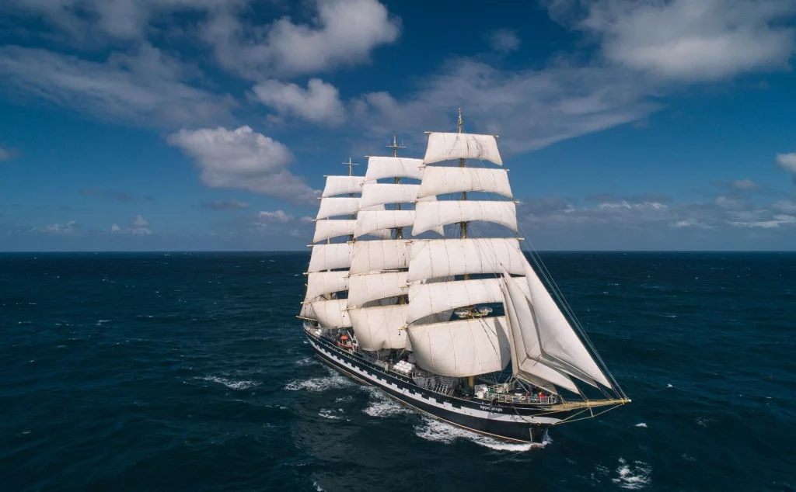
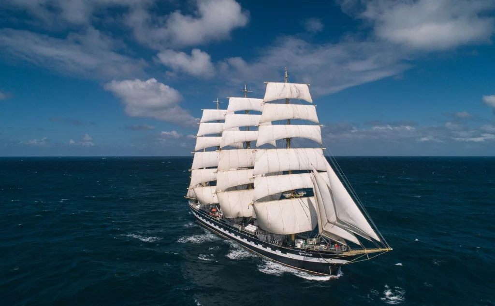

ВИНДЖАММЕР "КРУЗЕНШТЕРН"
Винджаммерами называют тяжелые корабли с полным парусным вооружением, 4-х или 5-тимачтовые барки со стальными корпусами, мачтами и реями, а также с такелажем из стальных тросов и цепей, которые строились начиная примерно с 1880 года и до окончания коммерческого судоходства под парусом (приблизительно - 1957 года), преимущественно для океанического плавания.
 

КРАТКАЯ ИСТОРИЯ
- 1926 год: 4-хмачтовый барк, построенный в Бремерхафене, спущен на воду под именем "Падуя".
- 30.08.1926: первый рейс , продолжительность 74 дня, из Гамбурга в Чили (Талькауано).
- 1939 - 1945: Не пострадавшая от авиации и подводных лодок в эпицентре морских сражений, «Падуя» уцелела в самой страшной войне 20-го века.
- 11.01.1946: по протоколу Постдамской конференции "Падуя" переходит в собственность СССР.
- 23.04.1946: присвоено имя прославленного русского адмирала И.Ф. Крузенштерна.
- С 1958-го по 1961-й год: «Крузенштерн» получил самоходность – были встроены два главных дизельных двигателя мощностью 800 л.с. каждый. СССР в это время начал масштабное освоение Мирового океана, а поскольку новых, специализированных судов еще построено не было, взять на себя роль научного исследователя пришлось "Крузенштерну"
- 1974 - 1991: участие в международных регатах.
- 1991: судно передано от объединения «Эстрыбпром» в Таллине Калининградскому высшему инженерному морскому училищу (КВИМУ) в Калининграде.
- 1995 - 1996: первое кругосветное плавание.
- 2005 - 2006: второе кругосветное плавание.
- 2009 - 2010: Трансатлантическпая экспедиция.
- 2015: Международная историко-мемориальная экспедиция.
- 2020: Кругосветная экспедиция парусников Росрыболовства.
ТЕХНИЧЕСКИЕ ХАРАКТЕРИСТИКИ
- Длина габаритная: 114,5 м
- Ширина габаритная: 14,04 м
- Осадка по летнюю ватерлинию: 6,27 м
- Площадь парусов: 3400 м²
- Высота мачты над палубой 56 м
- Скорость под парусами: 17 узлов
- Скорость на двигателях: 10 узлов
- Количество палуб: 5
- Количество переборок: 7
- Экипаж: 60 человек
- Количество курсантов: 120 человек